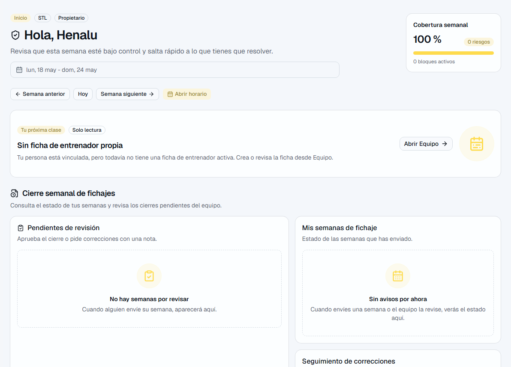
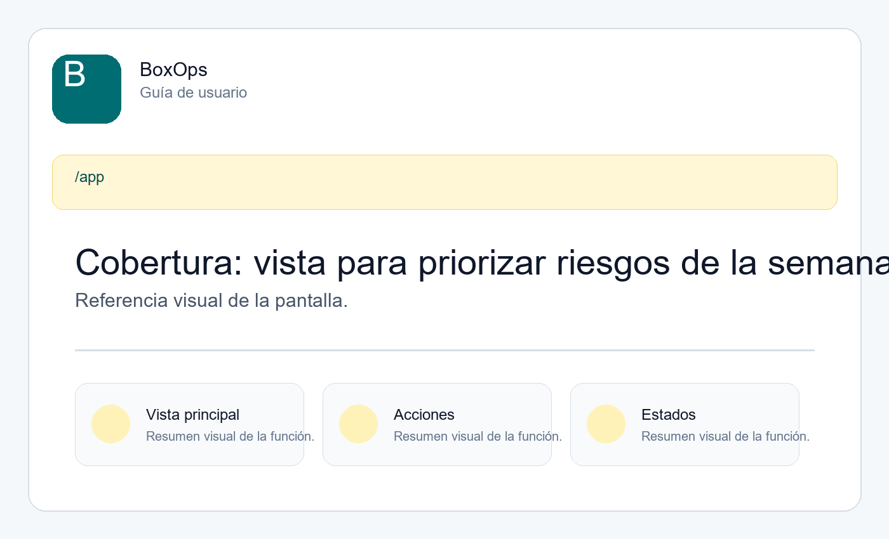
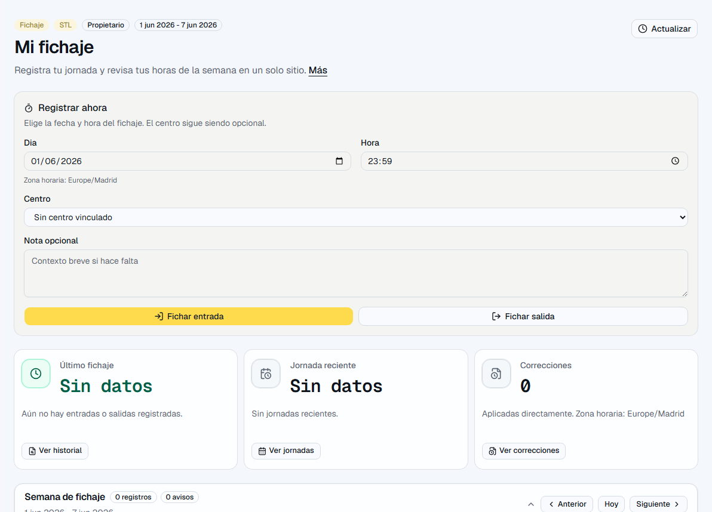

Supervisión diaria: horario, cobertura, solicitudes, ausencias, jornadas y fichaje.
Para quien resuelve el día a día sin tocar la configuración global del negocio.
| Pantalla | Ruta | Sirve para |
|---|---|---|
| Inicio | /app | Vista rápida de semana y pendientes. |
| Horario | /app/schedule | Bloques, asignaciones y contexto. |
| Cobertura | /app/coverage | Lista de riesgos accionables. |
| Solicitudes | /app/requests | Cambios o cobertura pendiente. |
| Ausencias | /app/absences | Peticiones y estados de ausencia. |
| Jornadas | /app/work-windows | Presencia prevista. |
| Mi fichaje | /app/time | Registro propio y revisión si aplica. |
| Estadísticas | /app/stats | Lectura operativa de carga y avisos. |
Empieza por estos recorridos. Son los que más valor dan en el uso diario.
Estas zonas no siempre son la primera parada, pero ayudan a entender la operación completa.
| Función | Dónde está | Para qué sirve |
|---|---|---|
| Cobertura | /app/coverage | Prioriza clases sin cubrir, insuficientes o con conflicto para resolver la semana con menos vueltas. |
| Solicitudes | /app/requests | Muestra peticiones de cambio o cobertura y ayuda a decidir qué hacer con cada caso. |
| Ausencias | /app/absences | Ayuda a revisar ausencias y comprobar si afectan a bloques o cobertura. |
| Jornadas previstas | /app/work-windows | Da contexto de disponibilidad/presencia prevista para organizar mejor el día. |
| Mi fichaje | /app/time | Registra jornada propia y, si el rol lo permite, revisa correcciones o cierres del equipo. |
| Mi cuenta y firma | /app/account | Gestiona perfil propio, avatar y firma interna privada. |
| Documentos | /app/documents | Permite consultar documentos o programación autorizada sin abrir información sensible por defecto. |
| Estadísticas | /app/stats | Resume actividad, carga y avisos para entender la operación sin entrar a cada pantalla. |
Las imágenes ayudan a reconocer la pantalla y los elementos principales.


